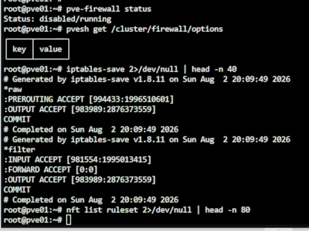
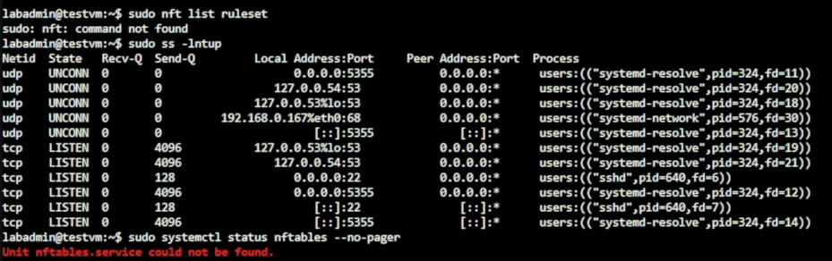

Day 10｜防火牆種類與部署位置：封包過濾、代理防火牆、WAF、IDS／IPS 與 NGFW
對應文章：Day 10｜防火牆種類與部署位置：封包過濾、代理防火牆、WAF、IDS／IPS 與 NGFW
本日不急著部署 OPNsense，先確認每一層負責的工作，避免同一條規則在 PVE、OPNsense 與 Debian Host 同時修改後無法排錯。
1. 固定責任邊界
| 層級 | 本系列用途 | 不負責 |
|---|---|---|
| 上游路由器 | 提供 L0 管理、OPNsense WAN 與 Day 03～15 PVE Bootstrap | Day 15 後的 PVE／服務 VLAN 存取政策 |
| OPNsense | VLAN Routing、NAT、VPN、跨區 Default Deny | PostgreSQL Role 權限 |
| PVE Firewall | 保護 Hypervisor／特定 VM 的管理面 | 取代 OPNsense Routing |
| Debian nftables | 主機最後一道入口限制 | 跨 VLAN Gateway |
| Nginx／HAProxy | L7 Web 與角色感知 DB Proxy | WAN 邊界防火牆 |
| PostgreSQL | pg_hba.conf、TLS、Role／GRANT |
阻止所有網路掃描 |
2. 記錄 PVE Firewall 現況
在 pve01～pve03 各執行：
pve-firewall status
pvesh get /cluster/firewall/options
iptables-save 2>/dev/null | head -n 40
nft list ruleset 2>/dev/null | head -n 80

圖（一）pve01 的 PVE Firewall 狀態與現有規則。
只記錄現況，不在三台節點同時啟用新規則。若之後要啟用 PVE Firewall，先建立允許目前管理來源連 TCP 8006／22 的規則，再由單一節點測試。
3. 記錄 Debian Host Firewall 現況
在一台測試 VM 執行：
sudo nft list ruleset
sudo ss -lntup
sudo systemctl status nftables --no-pager

圖（二）Debian 測試 VM 的 nftables 與 Socket 現況。
空白規則集表示目前沒有 nftables 規則；command not found 則表示 nftables 尚未安裝。兩種結果都可作為後續比較基準。